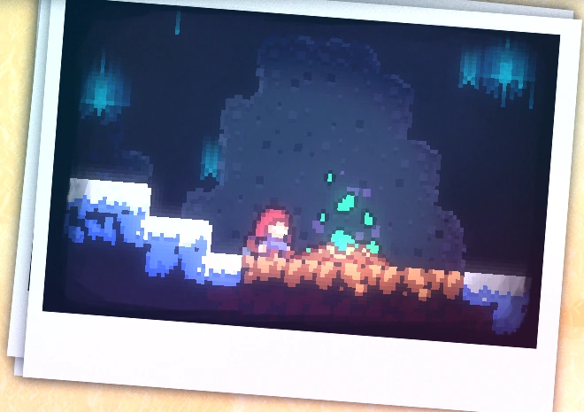
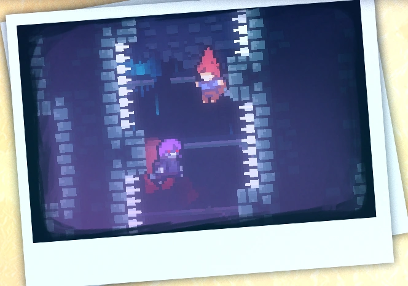
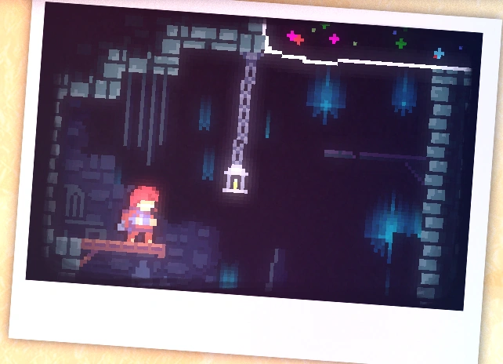

Capítulo 2: Terreno Antigo - lado B
Terreno Antigo é o segundo capítulo de Celeste. O lado B apresenta um aumento significativo na dificuldade. Para desbloquear o capítulo, é necessário adquirir a fita cassette no lado A do respectivo capítulo.
Mecânicas
Terreno Antigo - lado B apresenta 1 nova mecânica:
• Dream Jump,
Coletáveis
Coração de cristal:
O coração de cristal do capítulo 2 - lado B é adquirido ao concluir o capítulo.

Morangos:
• Morango dourado:
Conseguido após concluir a fase enquanto segura o morango dourado. Só pode ser coseguido após concluir o lado B do capítulo 8.
Subcapítulos
Terreno Antigo - lado B possui 3 subcapítulos:
Início
Cadeado com Segredo
Altar dos Sonhos
